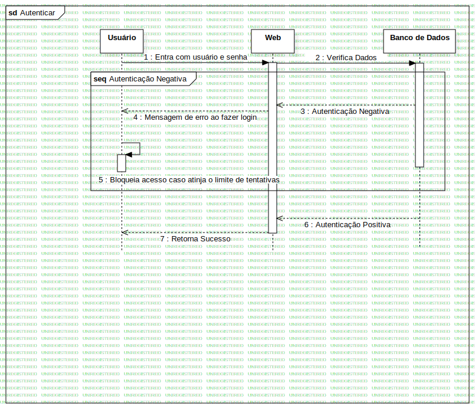

Interaction1
UMLInteraction
Untitled
::
Autenticar Usuário
::
Interaction1
Description
none
Diagrams

Autenticar
Fragments
Autenticação Negativa
Participants
Usuário
Web
Banco de Dados
Messages
Entra com usuário e senha (Usuário→Web)
Verifica Dados (Web→Banco de Dados)
Autenticação Negativa (Banco de Dados→Web)
Mensagem de erro ao fazer login (Web→Usuário)
Bloqueia acesso caso atinja o limite de tentativas (Usuário→Usuário)
Autenticação Positiva (Banco de Dados→Web)
Retorna Sucesso (Web→Usuário)
Properties
Name
Value
name
Interaction1
stereotype
null
visibility
public
isReentrant
true
Owned Elements
Autenticar